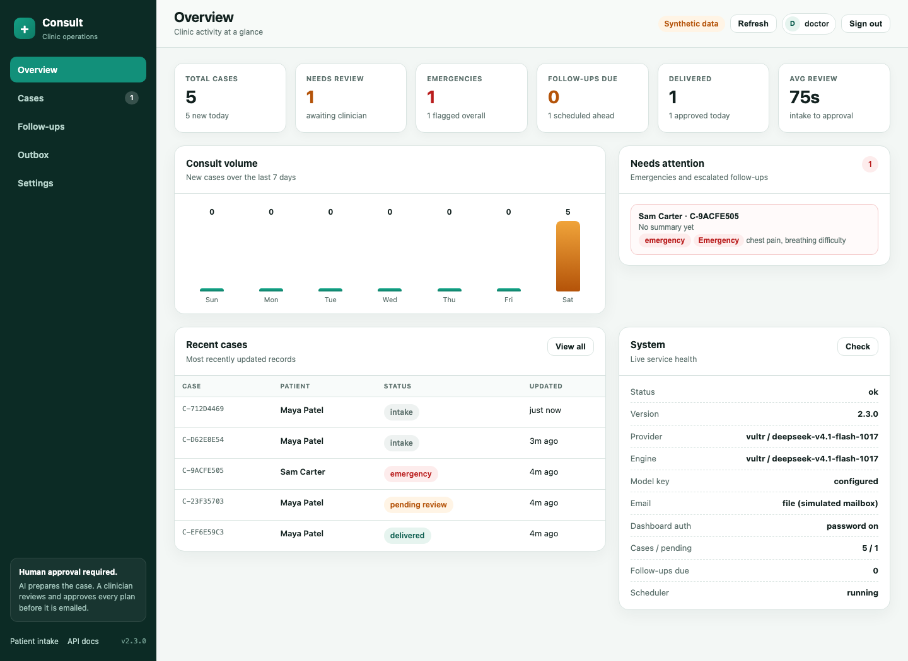
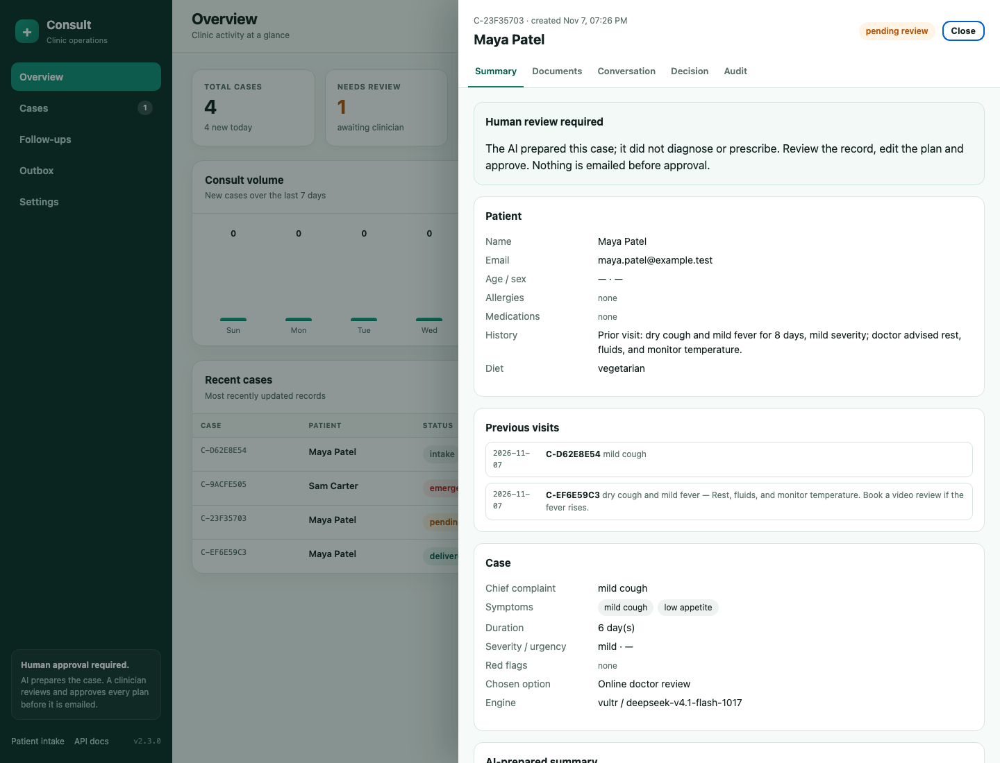

AI intake. Doctor decides.
A safe, multi-step clinic workflow: conversational intake by text or voice, deterministic emergency screening, document reading, structured case preparation, human approval, email and follow-up escalation.

The clinician, front desk and practice owner all handle the same new-patient story across phone, chat, paper and inbox.
Symptoms, history, allergies, medications and lab values arrive unstructured. The urgent case competes with the routine paperwork.
Missed escalation is the failure that matters. Speed without a safety gate is not a product.
A short text or voice conversation, an optional text/CSV/PDF document and two or three plain-language care paths.
Deterministic red-flag gate, structured history, document parsing, summary, safety warnings and a follow-up plan.
The operations console shows the case, documents, prior visits, conversation and audit trail. Approval is the only path that sends a plan.
Open the public app, then sign in to the clinic console. The whole loop takes about two minutes.
Complete a synthetic intake by text or voice and choose a care option.
Sign in at /doctor and open the pending case.
Inspect the summary, documents, allergy warning and conversation; approve a plan.
See the plan in Outbox, then submit a red-flag follow-up and watch the case escalate.

Public pages, no staff credential.
Signed session, staff APIs only.
Case state · deterministic safety gate · approval gate · audit trail · SQLite · documents · email · scheduler
Caddy TLS · systemdOpenAI-compatible endpoint; the key stays server-side.
Email outbox, token check-in and escalation state.
A deterministic, negation-aware rule gate runs before every model call. The model can add a flag; it cannot override the gate.
Only /approve sends a plan. It requires pending review, cannot run twice and is blocked for emergency cases.
The agent prepares the case. Prescription text is entered by the doctor; a reply guard blocks explicit dosing instructions.
Patient, agent, safety and doctor actions are timestamped. Every reply records its engine, including labelled rule fallbacks.
Small independent clinics and telehealth teams with 1–15 clinicians. They need doctor oversight but cannot staff a full intake and documentation team.
US physician practices
of physician offices have fewer than 50 employees
US-only annual software ceiling at $99/clinic/month
1–2 clinicians, intake, case queue and follow-ups.
Up to 5 clinicians, outbox, audit export and priority support.
Higher volume, custom intake forms and integration work.
ROI scenario: save 10 minutes per new patient × 20 new patients/week ≈ 3.3 staff hours/week, before counting fewer missed follow-ups and a complete audit trail. The buyer is the practice owner; the daily users are the clinician and front desk.
Backend, inference integration, workflow design, dashboard and Vultr deployment. Solo build for the Vultr Agent Rush Hackathon.
2–3 clinic design partners with synthetic and consented data.
SMTP, calendar and EHR/fax handoff for real operations.
Per-user auth, consent, encryption at rest and compliance review.